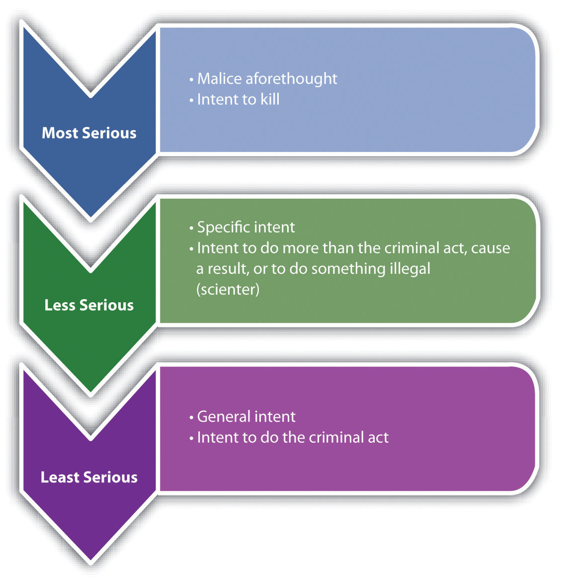
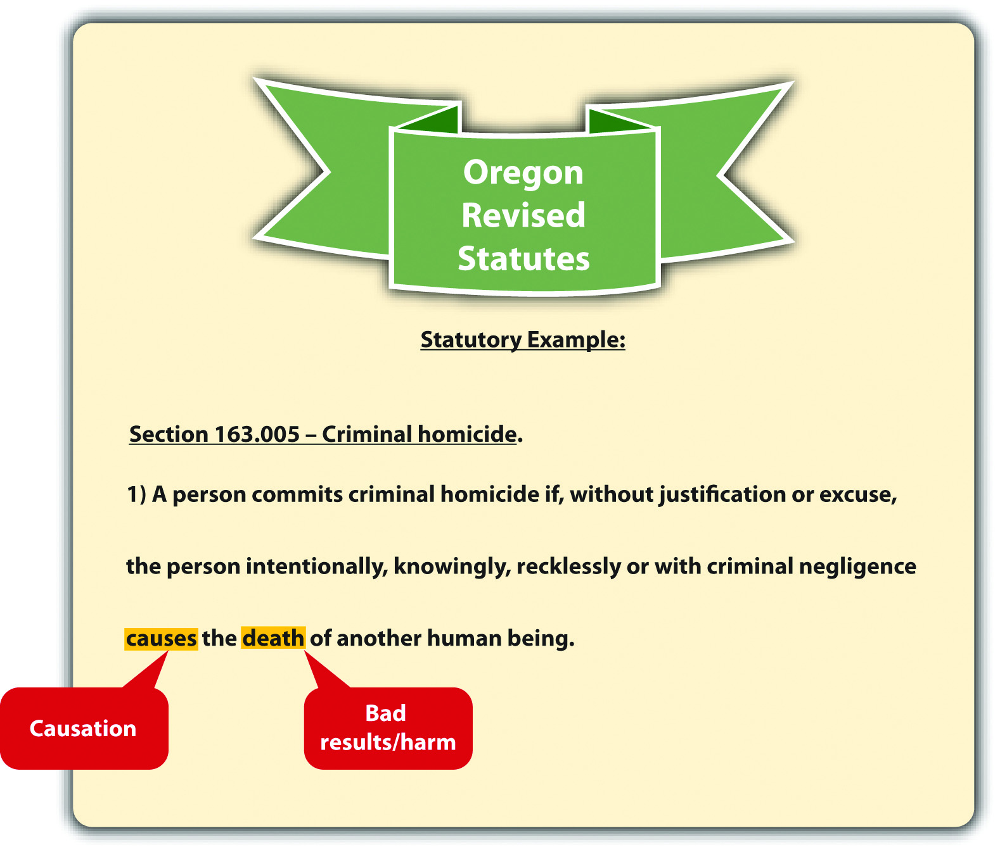
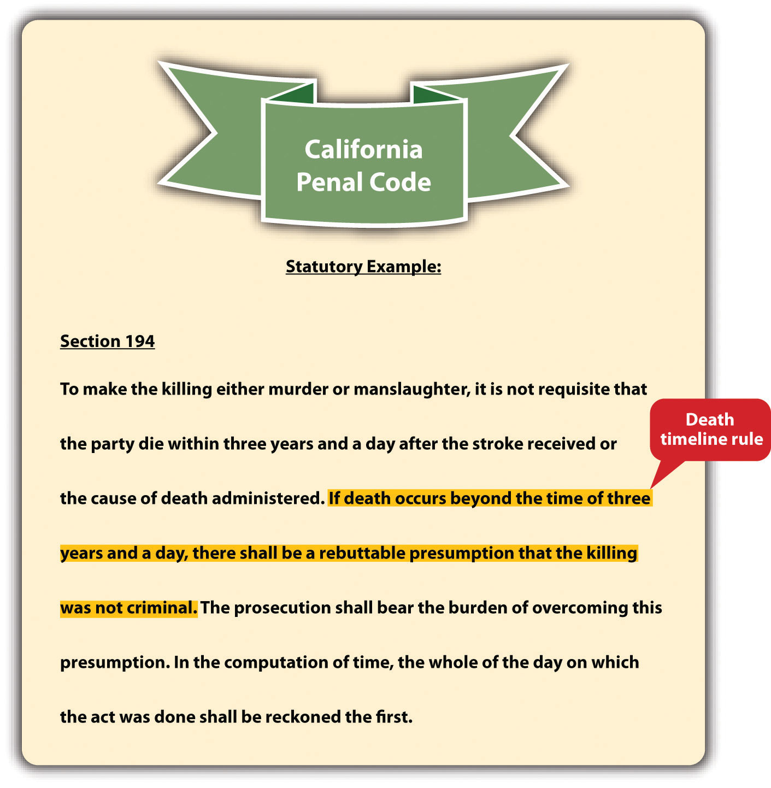
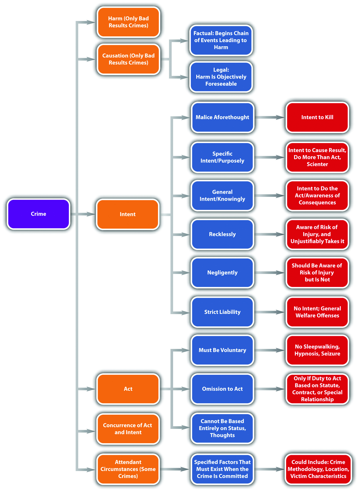

Source: Image courtesy of Tara Storm.
Thus, an Olympic swimmer may be deemed by the community as a shameful coward, or worse, for not rescuing a drowning child in the neighbor’s pool, but she is not a criminal.
State ex rel. Kuntz v. Thirteenth Jud. Dist., cited in Section 4 "Duty to Act Based on a Special Relationship"
Crimes can be broken down into elementsPart of a crime., which the prosecution must prove beyond a reasonable doubt. Criminal elements are set forth in criminal statutes, or cases in jurisdictions that allow for common-law crimes. With exceptions, every crime has at least three elements: a criminal actThe illegal bodily movement or possession described in a criminal statute, or in a case in jurisdictions that allow common-law crimes., also called actus reus; a criminal intent, also called mens rea; and concurrence of the two. The term conductThe criminal act and its accompanying state of mind. is often used to reflect the criminal act and intent elements. As the Model Penal Code explains, “‘conduct’ means an action or omission and its accompanying state of mind” (Model Penal Code § 1.13(5)).
Figure 4.1 Criminal Code of Georgia

Recall from Chapter 1 "Introduction to Criminal Law" that not all crimes require a bad result. If a crime does require a bad result, the prosecution must also prove the additional elements of causation and harm.
Another requirement of some crimes is attendant circumstancesFactors that must be present when the crime is committed, such as the crime’s methodology, location and setting, or victim characteristics, among others.. Attendant circumstances are specified factors that must be present when the crime is committed. These could include the crime’s methodology, location or setting, and victim characteristics, among others.
This chapter analyzes the elements of every crime. Chapter 7 "Parties to Crime" through Chapter 13 "Crimes against the Government" analyze the elements of specific crimes, using a general overview of most states’ laws, the Model Penal Code, and federal law when appropriate.
Janine gets into a fight with her boyfriend Conrad after the senior prom. She grabs Conrad’s car keys out of his hand, jumps into his car, and locks all the doors. When Conrad strides over to the car, she starts the engine, puts the car into drive, and tries to run him down. It is dark and difficult for Janine to see, so Conrad easily gets out of her way and is unharmed. However, Janine is thereafter arrested and charged with attempted murder. In this case, the prosecution has to prove the elements of criminal act, criminal intent, and concurrence for attempted murder. The prosecution does not have to prove causation or that Conrad was harmed because attempt crimes, including attempted murder, do not have a bad result requirement. Attempt and other incomplete or inchoate crimes are discussed in Chapter 8 "Inchoate Offenses".
Criminal act, or actus reus, is generally defined as an unlawful bodily movement.N.Y. Penal Law § 15.00, accessed October 25, 2010, http://law.onecle.com/new-york/penal/PEN015.00_15.00.html. The criminal statute, or case in jurisdictions that allow common-law crimes, describes the criminal act element.
Figure 4.2 Alabama Criminal Code

One requirement of criminal act is that the defendant perform it voluntarily. In other words, the defendant must control the act. It would not serve the policy of specific deterrence to punish the defendant for irrepressible acts. The Model Penal Code gives the following examples of acts that are not voluntary and, therefore, not criminal: reflexes, convulsions, bodily movements during unconsciousness or sleep, conduct during hypnosis or resulting from hypnotic suggestion, or a bodily movement that otherwise is not a product of the effort or determination of the actor, either conscious or habitual (Model Penal Code § 2.01 (2)). One voluntary act is enough to fulfill the voluntary act requirement. Thus if a voluntary act is followed by an involuntary one, the court may still impose criminal liability depending on the circumstances.Govt. of Virgin Islands v. Smith, 278 F.2d 169 (1960), accessed October 26, 2010, http://openjurist.org/278/f2d/169/government-of-the-virgin-islands-v-smith.
Perry is hypnotized at the local county fair. The hypnotist directs Perry to smash a banana cream pie into his girlfriend Shelley’s face. Smashing a pie into a person’s face is probably battery in most states, but Perry did not commit the act voluntarily, so he should not be convicted of a crime. Punishing Perry for battery would not specifically deter Perry from performing the act again while hypnotized because he is not in control of his behavior when experiencing this mental state.
Timothy attends a party at a friend’s house and consumes several glasses of red wine. Timothy then attempts to drive his vehicle home. While driving, Timothy passes out at the wheel and hits another vehicle, killing its occupant. Timothy can probably be convicted of one or more crimes in this situation. Timothy’s acts of drinking several glasses of wine and then driving a vehicle are voluntary. Thus even though Timothy got into a car accident while unconscious, his involuntary act was preceded by conscious, controllable, and voluntary action. A punishment in this instance could specifically deter Timothy from drinking and driving on another occasion and is appropriate based on the circumstances.
Generally, a defendant’s status in society is not a criminal act. Status is who the defendant is, not what the defendant does. Similar to punishment for an involuntary act, when the government punishes an individual for status, it is essentially targeting that individual for circumstances that are outside his or her control. This punishment may be cruel and unusual pursuant to the Eighth Amendment if it is disproportionate to the defendant’s behavior.
In Robinson v. California, 370 U.S. 660 (1962), the US Supreme Court held that it is unconstitutional as cruel and unusual punishment pursuant to the Eighth Amendment to punish an individual for the status of being a drug addict—even if the drugs to which the defendant is addicted are illegal. The Court compared drug addiction to an illness, such as leprosy or venereal disease. Punishing a defendant for being sick not only is inhumane but also does not specifically deter, similar to a punishment for an involuntary act.
If the defendant can control the actions at issue in spite of his or her status, the defendant’s conduct can be constitutionally criminalized and punished pursuant to the Eighth Amendment. In Powell v. Texas, 392 U.S. 514 (1968), the US Supreme Court upheld the defendant’s conviction for “drunk in public,” in spite of the defendant’s status as an alcoholic. The Court held that it is difficult but not impossible for an alcoholic to resist the urge to drink, so the behavior the statute criminalized was voluntary. Also, the Court ruled that the state has an interest in treating alcoholism and preventing alcohol-related crimes that could injure the defendant and others. Pursuant to Powell, statutes that criminalize voluntary acts that arise from status are constitutional under the Eighth Amendment.
Refer to the example in Section 4 "Example of a Voluntary Act Followed by a Nonvoluntary Act", where Timothy drives under the influence of alcohol and kills another. A state statute that criminalizes killing another person while driving under the influence is constitutional as applied to Timothy, even if Timothy is an alcoholic. The state has an interest in treating alcoholism and preventing alcohol-related crimes that could injure or kill Timothy or another person. Timothy’s act of driving while intoxicated is voluntary, even if his status as an alcoholic makes it more difficult for Timothy to control his drinking. Thus Timothy and other alcoholic defendants can be prosecuted and punished for killing another person while driving under the influence without violating the Eighth Amendment.
Thoughts are a part of criminal intent, not criminal act. Thoughts cannot be criminalized.
Brianna, a housecleaner, fantasizes about killing her elderly client Phoebe and stealing all her jewelry. Brianna writes her thoughts in a diary, documenting how she intends to rig the gas line so that gas is pumped into the house all night while Phoebe is sleeping. Brianna includes the date that she wants to kill Phoebe in her most recent diary entry. As Brianna leaves Phoebe’s house, her diary accidentally falls out of her purse. Later, Phoebe finds the diary on the floor and reads it. Phoebe calls the police, gives them Brianna’s diary, and insists they arrest Brianna for attempted murder. Although Brianna’s murder plot is sinister and is documented in her diary, an arrest is improper in this case. Brianna cannot be punished for her thoughts alone. If Brianna took substantial steps toward killing Phoebe, an attempted murder charge might be appropriate. However, at this stage, Brianna is only planning a crime, not committing a crime. Phoebe may be able to go to court and get a restraining order against Brianna to prevent her from carrying out her murder plot, but Brianna cannot be incapacitated by arrest and prosecution for attempted murder in this case.
An exception to the requirement of a criminal act element is omission to actAn exception to the criminal act element; omission to act can only be criminal if there is a legal duty to act.. Criminal prosecution for a failure to act is rare because the government is reluctant to compel individuals to put themselves in harm’s way. However, under certain specific circumstances, omission to act can be criminalized.
An omission to act can only be criminal when the law imposes a duty to act.N.Y. Penal Law § 15.00, accessed October 25, 2010, http://law.onecle.com/new-york/penal/PEN015.00_15.00.html. This legal duty to act becomes an element of the crime, and the prosecution must prove it beyond a reasonable doubt, along with proving the defendant’s inaction under the circumstances. Failure or omission to act is only criminal in three situations: (1) when there is a statute that creates a legal duty to act, (2) when there is a contract that creates a legal duty to act, or (3) when there is a special relationship between the parties that creates a legal duty to act. Legal duties to act vary from state to state and from state to federal.
When a duty to act is statutory, it usually concerns a government interest that is paramount. Some common examples of statutory duties to act are the duty to file state or federal tax returns,26 U.S.C. § 7203, accessed October 25, 2010, http://www.law.cornell.edu/uscode/26/usc_sec_26_00007203----000-.html. the duty of health-care personnel to report gunshot wounds,Fla. Stat. Ann. § 790.24, accessed October 25, 2010, http://law.onecle.com/florida/crimes/790.24.html. and the duty to report child abuse.Ky. Rev. Stat. Ann. § 620.030, accessed October 25, 2010, http://www.lrc.ky.gov/krs/620-00/030.pdf.
Figure 4.3 Kentucky Revised Statutes
At common law, it was not criminal to stand by and refuse to help someone in danger. Some states supersede the common law by enacting Good Samaritan statutesA statute compelling an individual to assist another under certain specified circumstances. that create a duty to assist those involved in an accident or emergency situation. Good Samaritan statutes typically contain provisions that insulate the actor from liability exposure when providing assistance.Minnesota Code § 604A.01, accessed October 25, 2010, http://law.justia.com/minnesota/codes/2005/595/604a-s01.html.
Figure 4.4 Minnesota Good Samaritan Law

Good Samaritan Sued after Rescuing Woman in an Accident
This video is a news story on a California Supreme Court case regarding the civil liability of a Good Samaritan:
A duty to act can be based on a contract between the defendant and another party. The most prevalent examples would be a physician’s contractual duty to help a patient or a lifeguard’s duty to save someone who is drowning. Keep in mind that experts who are not contractually bound can ignore an individual’s pleas for help without committing a crime, no matter how morally abhorrent that may seem. For example, an expert swimmer can watch someone drown if there is no statute, contract, or special relationship that creates a legal duty to act.
A special relationship may also be the basis of a legal duty to act. The most common special relationships are parent-child, spouse-spouse, and employer-employee. Often, the rationale for creating a legal duty to act when people are in a special relationship is the dependence of one individual on another. A parent has the obligation by law to provide food, clothing, shelter, and medical care for his or her children, because children are dependent on their parents and do not have the ability to procure these items themselves. In addition, if someone puts another person in peril, there may be a duty to rescue that person.State ex rel. Kuntz v. Thirteenth Jud. Dist., 995 P.2d 951 (2000), accessed October 25, 2010, http://caselaw.findlaw.com/mt-supreme-court/1434948.html. Although this is not exactly a special relationship, the victim may be dependent on the person who created the dangerous situation because he or she may be the only one present and able to render aid. On a related note, some jurisdictions also impose a duty to continue to provide aid, once aid or assistance has started.Jones v. U.S., 308 F.2d 307 (1962), accessed October 25, 2010, http://scholar.google.com/scholar_case?case=14703438613582917232&hl=en&as_sdt=2002&as_vis=1. Similar to the duty to rescue a victim the defendant has put in peril, the duty to continue to provide aid is rooted in the victim’s dependence on the defendant and the unlikely chance that another person may come along to help once the defendant has begun providing assistance.
Recall the example from Chapter 1 "Introduction to Criminal Law", Section 1.2.1 "Example of Criminal Law Issues", where Clara and Linda are shopping together and Clara stands by and watches as Linda shoplifts a bra. In this example, Clara does not have a duty to report Linda for shoplifting. Clara does not have a contractual duty to report a crime in this situation because she is not a law enforcement officer or security guard obligated by an employment contract. Nor does she have a special relationship with the store mandating such a report. Unless a statute or ordinance exists to force individuals to report crimes committed in their presence, which is extremely unlikely, Clara can legally observe Linda’s shoplifting without reporting it. Of course, if Clara assists Linda with the shoplifting, she has then performed a criminal act or actus reus, and a criminal prosecution is appropriate.
Penelope stands on the shore at a public beach and watches as a child drowns. If Penelope’s state has a Good Samaritan law, she may have a duty to help the child based on a statute. If Penelope is the lifeguard, she may have a duty to save the child based on a contract. If Penelope is the child’s mother, she may have a duty to provide assistance based on their special relationship. If Penelope threw the child in the ocean, she may have a duty to rescue the child she put in peril. If Penelope is just a bystander, and no Good Samaritan law is in force, she has no duty to act and cannot be criminally prosecuted if the child suffers harm or drowns.
Although it is passive rather than active, possession is still considered a criminal act. The most common objects that are criminal to possess are illegal contraband, drugs, and weapons. There are two types of possession: actual possessionThe defendant has an item on or very near his or her person. and constructive possessionThe defendant has an item within his or her area of control.. Actual possession indicates that the defendant has the item on or very near his or her person. Constructive possession indicates that the item is not on the defendant’s person, but is within the defendant’s area of control, such as inside a house or automobile with the defendant.State v. Davis, 84 Conn. App. 505 (2004), accessed February 13, 2011, http://scholar.google.com/scholar_case?case=12496216636522596448&hl=en&as_sdt=2&as_vis=1&oi=scholarr. More than one defendant can be in possession of an object, although this would clearly be a constructive possession for at least one of them.
Because it is passive, possession should be knowing, meaning the defendant is aware that he or she possesses the item.Connecticut Jury Instructions No. 2.11-1, accessed February 13, 2011, http://www.jud.ct.gov/ji/criminal/part2/2.11-1.htm. As the Model Penal Code states in § 2.01(4), “[p]ossession is an act, within the meaning of this Section, if the possessor knowingly procured or received the thing possessed or was aware of his control thereof for a sufficient period to have been able to terminate his possession.” In the vast majority of states, a statute permitting a conviction for possession without this knowledge or awareness lacks the criminal intent element and would be unenforceable.
A state has a criminal statute that prohibits “being within 100 feet of any quantity of marijuana.” Ricardo sits next to Jean on the subway. A law enforcement officer smells marijuana and does a pat-down search of Jean. He discovers that Jean has a large baggie of marijuana in his jacket pocket and arrests Jean and Ricardo for marijuana possession. Ricardo was within one hundred feet of marijuana as prohibited by the statute, but Ricardo should not be prosecuted for marijuana possession. No evidence exists to indicate that Ricardo knew Jean, or knew that Jean possessed marijuana. Thus Ricardo does not have the criminal intent or mens rea for possession, and the state’s possession statute should not be enforced against him.
Answer the following questions. Check your answers using the answer key at the end of the chapter.
Although there are exceptions that are discussed shortly, criminal intentThe mental state required for a crime; also called mens rea. or mens rea is an essential element of most crimes. Under the common law, all crimes consisted of an act carried out with a guilty mind. In modern society, criminal intent can be the basis for fault, and punishment according to intent is a core premise of criminal justice. As stated in Chapter 1 "Introduction to Criminal Law", grading is often related to the criminal intent element. Crimes that have an “evil” intent are malum in se and subject the defendant to the most severe punishment. Crimes that lack the intent element are less common and are usually graded lower, as either misdemeanors or infractions.
Figure 4.5 New York Penal Law

States and the federal government vary in their approach to defining criminal intent, and each jurisdiction describes the criminal intent element in a criminal statute, or case, in jurisdictions that allow common-law crimes. In this section, common-law definitions of criminal intent are explored, along with definitions of the criminal mental states in the Model Penal Code.
The common-law criminal intents ranked in order of culpability are malice aforethoughtIntent to kill, which is the common-law intent for murder., specific intentThe common-law intent to cause a specific result, do something other than the criminal act, or scienter., and general intentThe common-law intent to perform the criminal act.. Statutes and cases use different words to indicate the appropriate level of intent for the criminal offense, so what follows is a basic description of the intent definitions adopted by many jurisdictions.
Malice aforethought is a special common-law intent designated for only one crime: murder. The definition of malice aforethought is “intent to kill.” Society considers intent to kill the most evil of all intents, so malice aforethought crimes such as first- and second-degree murder generally mandate the most severe of punishments, including the death penalty in jurisdictions that allow for it. Malice aforethought and criminal homicide are discussed in detail in Chapter 9 "Criminal Homicide".
Specific intent is the intent with the highest level of culpability for crimes other than murder. Unfortunately, criminal statutes rarely describe their intent element as “specific” or “general,” and a judge may be required to define the level of intent using the common law or a dictionary to explain a word’s ordinary meaning. Typically, specific intent means that the defendant acts with a more sophisticated level of awareness.Connecticut Jury Instructions No. 2.3-1, accessed February 14, 2011, http://www.jud.ct.gov/ji/criminal/part2/2.3-1.htm. Crimes that require specific intent usually fall into one of three categories: either the defendant intends to cause a certain bad result, the defendant intends to do something more than commit the criminal act, or the defendant acts with knowledge that his or her conduct is illegal, which is called scienterThe intent to do an unlawful act..
A state statute defines mayhem as “physical contact with another, inflicted with the intent to maim, disfigure, or scar.” This statute describes a specific intent crime. To be guilty of mayhem under the statute, the defendant must inflict the physical contact with the intent of causing the bad result of maiming, disfigurement, or scarring. If the prosecution cannot prove this high-level intent, the defendant may be acquitted (or charged and convicted of a lower-level intent crime like battery).
So if Pauline says, “It’s time to permanently mess up that pretty face,” and thereafter takes out a razor and slices Peter’s cheek with it, Pauline might be found guilty of mayhem. On the other hand, if Pauline slaps Peter while he is shaving without making the comment, and the razor bites into his cheek, it is more challenging to prove that she intended a scarring, and Pauline might be found guilty only of battery.
A state statute defines theft as “a permanent taking of property belonging to another.” This statute describes a specific intent crime. To be guilty of theft under the statute, the defendant must intend to do more than “take the property of another,” which is the criminal act. The defendant must also intend to keep the property permanently.
So if Pauline borrows Peter’s razor to shave her legs, she has “taken the property of another,” but she has not committed theft for the simple reason that she intends to return the property after use.
Although the terms mens rea and scienter are sometimes used interchangeably, many jurisdictions define scienter as knowledge that an act is illegal. Scienter can be the basis of specific intent in some statutes. So a statute that makes it a crime to “willfully file a false tax return” may require knowledge that the tax return includes false information and that it will be unlawful to file it.U.S. v. Pompanio, 429 U.S. 10 (1976), accessed October 28, 2010, http://supreme.justia.com/us/429/10/case.html. If the prosecution fails to prove beyond a reasonable doubt that the defendant knew his or her conduct was illegal, this could nullify scienter, and the prosecution cannot prove specific intent.
General intent is less sophisticated than specific intent. Thus general intent crimes are easier to prove and can also result in a less severe punishment. A basic definition of general intent is the intent to perform the criminal act or actus reus. If the defendant acts intentionally but without the additional desire to bring about a certain result, or do anything other than the criminal act itself, the defendant has acted with general intent.People v. McDaniel, 597 P.2d 124 (1979), accessed February 14, 2011, http://scholar.google.com/scholar_case?case=8266915507346002022&hl=en&as_sdt=2&as_vis=1&oi=scholarr.
Intent is a notoriously difficult element to prove because it is locked inside the defendant’s mind. Ordinarily, the only direct evidence of intent is a defendant’s confession, which the government cannot forcibly obtain because of the Fifth Amendment privilege against self-incrimination. Witnesses who hear the defendant express intent are often unable to testify about it because of evidentiary rules prohibiting hearsay. However, many jurisdictions allow an inference of general intent based on the criminal act.Commonwealth v. Ely, 444 N.E.2d 1276 (1983), accessed February 13, 2011, http://scholar.google.com/scholar_case?case=369554378994187453&hl=en&as_sdt=2&as_vis=1&oi=scholarr. In essence, if the jury accepts the inference, the prosecution does not have the burden of proving intent for a general intent crime.
A state statute defines battery as “intentional harmful or offensive physical contact with another.” This statute describes a general intent crime. To be guilty of battery under the statute, the defendant must only intend the harmful or offensive contact. The defendant does not have to desire that the contact produces a specific result, such as scarring, or death; nor does the defendant need scienter, or awareness that the physical contact is illegal.
If Addie balls up her fist and punches Eddie in the jaw after Eddie calls her a “stupid idiot,” Addie has probably committed battery under the statute. A prosecutor could prove that Addie committed the act of harmful or offensive contact using Eddie’s testimony and a physician’s report. The jury could thereafter be instructed to “infer intent from proof of the act.” If the jury accepts the inference and determines that Addie committed the criminal act, the jury could find Addie guilty of battery without additional evidence of intent.
Figure 4.6 Common Law Intents
Intent should not be confused with motiveThe reason the defendant performs the criminal act., which is the reason the defendant commits the criminal act or actus reus. Motive can generate intent, support a defense, and be used to determine sentencing. However, motive alone does not constitute mens rea and does not act as a substitute for criminal intent.
Isabella, a housewife with no criminal record, sits quietly in court waiting to hear the jury verdict in a trial for the rape of her teenage daughter by Ignatius. Ignatius has been convicted of child rape in three previous incidents. The jury foreman announces the decision finding Ignatius not guilty. Ignatius looks over his shoulder at Isabella and smirks. Isabella calmly pulls a loaded revolver out of her purse, and then shoots and kills Ignatius. In this case, Isabella’s motive is revenge for the rape of her teenage daughter, or the desire to protect other women from Ignatius’ conduct. This motive generated Isabella’s criminal intent, which is malice aforethought or intent to kill. In spite of Isabella’s motive, which is probably understandable under the circumstances, Isabella can be found guilty of murder because she acted with the murder mens rea. However, Isabella’s motive may be introduced at sentencing and may result in a reduced sentence such as life in prison rather than the death penalty. In addition, Isabella’s motive may affect a prosecutor’s decision to seek the death penalty at all because this would probably be disfavored by the public.
The Model Penal Code divides criminal intent into four states of mind listed in order of culpability: purposelyThe Model Penal Code intent to cause a specific result., knowinglyUnder the Model Penal Code, the defendant is aware of the nature of the act and is practically certain of the consequences., recklesslyUnder the Model Penal Code, the defendant is aware of a substantial risk of injury or harm, and unjustifiably takes it anyway., and negligentlyUnder the Model Penal Code, the defendant is unaware of a substantial risk of injury or harm, but should be, and unjustifiably deviates from the standard of care..
A defendant who acts purposely intends to engage in conduct of that nature and intends to cause a certain result.N.H. Rev. Stat. Ann. § 626:2(II)(a), accessed February 14, 2011, http://www.gencourt.state.nh.us/rsa/html/LXII/626/626-2.htm. Purposeful criminal intent resembles specific intent to cause harm, which was discussed previously. As the Model Penal Code states, “[a] person acts purposely with respect to a material element of an offense when: (i) if the element involves the nature of his conduct or a result thereof, it is his conscious object to engage in conduct of that nature or to cause such a result” (Model Penal Code § 2.02 (2) (a)).
Review the example given in Section 4 "Example of Specific Intent to Bring about a Bad Result", where Pauline takes out a razor and slices Peter’s cheek. In this example, Pauline is aware of the nature of the act (slicing someone’s cheek with a razor). Pauline also appears to be acting with the intent to cause a specific result, based on her statement to Peter. Thus Pauline is acting with specific intent or purposely and can probably be convicted of some form of aggravated battery or mayhem in most jurisdictions.
Knowingly indicates that the defendant is aware of the nature of the act and its probable consequences.Utah Code Ann. § 76-2-103(2), accessed February 14, 2011, http://le.utah.gov/~code/TITLE76/htm/76_02_010300.htm. Knowingly differs from purposely in that the defendant is not acting to cause a certain result but is acting with the awareness that the result is practically certain to occur.State v. Huff, 469 A.2d 1251 (1984), accessed February 14, 2011, http://scholar.google.com/scholar_case?case=4287195880403875631&hl=en&as_sdt=2&as_vis=1&oi=scholarr. The Model Penal Code describes knowingly as follows: “A person acts knowingly with respect to a material element of an offense when…he is aware that his conduct is of that nature…if the element involves a result of his conduct, he is aware that it is practically certain that his conduct will cause such a result” (Model Penal Code in § 2.02(2) (b)).
Victor brags to his girlfriend Tanya that he can shoot into a densely packed crowd of people on the subway train without hitting any of them. Tanya dares Victor to try it. Victor removes a concealed weapon from his waistband and shoots, aiming at a group of people standing with their back to him. The shot kills Monica, who is standing the closest to Victor. In this case, Victor did not intend to shoot Monica. In fact, Victor’s goal was to shoot and miss all the standing subway passengers. However, Victor was aware that he was shooting a loaded gun (the nature of the act) and was also practically certain that shooting into a crowd would result in somebody getting hurt or killed. Thus Victor acted knowingly according to the Model Penal Code. If the state in which Victor shoots Monica defines murder intent as knowingly under the Model Penal Code, then Victor has most likely committed murder in this case.
Figure 4.7 Crack the Code

Recklessly is a lower level of culpability than knowingly, and reckless intent crimes are not as common as offenses criminalizing purposeful, knowing conduct. The degree of risk awareness is key to distinguishing a reckless intent crime from a knowing intent crime. A defendant acts recklessly if he or she consciously disregards a substantial and unjustifiable risk that the bad result or harm will occur.Colo. Rev. Stat. Ann. § 18-1-501(8), accessed February 14, 2011, http://www.michie.com/colorado/lpext.dll?f=templates&fn=main-h.htm&cp=. This is different from a knowing intent crime, where the defendant must be “practically certain” of the bad results. The reckless intent test is two pronged. First, the defendant must consciously disregard a substantial risk of harm. The standard is subjective; the defendant must know of the substantial risk. Second, the defendant must take an unjustifiable risk, meaning that no valid reason exists for the risk. The standard for this prong is objective; if a reasonable person would not take the risk, then the defendant’s action in taking it is reckless. As the Model Penal Code states, “[t]he risk must be of such a nature and degree that…its disregard involves a gross deviation from the standard of conduct that a law-abiding person would observe in the actor’s situation” (Model Penal Code § 2.02(2) (c)).
Review the example in Section 4 "Example of Knowingly", where Victor shoots into a crowd of subway travelers and kills Monica. Change the example, and imagine that the subway train has only three passengers. Victor easily shoots in between them, yet the bullet ricochets off one of the seats and strikes Monica, killing her. Victor would be acting with reckless rather than knowing intent in this situation. Victor’s knowledge and awareness of the risk of injury or death when shooting a gun inside a subway car containing three passengers is probably substantial. A reasonable, law-abiding person would probably not take this action under these circumstances. Thus Victor might be charged with a lower-level form of criminal homicide like manslaughter in this case. The difference between murder and manslaughter is discussed in detail in Chapter 9 "Criminal Homicide".
Negligent intent crimes are less culpable than reckless intent crimes and are also less common. The difference between reckless and negligent intent is the defendant’s lack of awareness. While defendants committing negligent intent crimes are also faced with a substantial and unjustifiable risk, they are unaware of it, even though a reasonable person would be.Idaho Code Ann. § 18-101(2), accessed February 14, 2011, http://www.legislature.idaho.gov/idstat/Title18/T18CH1SECT18-101.htm. Thus the first prong of the reckless intent test is simply changed from a subjective to objective standard. As the Model Penal Code states, “[a] person acts negligently…when he should be aware of a substantial and unjustifiable risk that the material element exists or will result from his conduct”(Model Penal Code § 2.02(2) (d)).
Review the example in Section 4 "Example of Knowingly", where Victor shoots into a crowd of subway travelers and kills Monica. Change the example, and imagine that the subway train has no passengers. Victor brags to Tanya that he can shoot a crumpled napkin on the floor. Tanya challenges him to try it. Victor shoots at the napkin and misses, and the bullet ricochets three times off three different seats, travels backward, and strikes Tanya in the forehead, killing her instantly. In this case, Victor may be unaware of the bullet’s potential to ricochet several times and actually travel backward. However, the trier of fact can determine that a “reasonable person” would be aware that shooting a gun inside a small subway train could result in injury or death. This would be a finding that Victor acted negligently, under the circumstances. If the state in which Victor shot Tanya criminalizes negligent killings, then Victor could be found guilty of criminal homicide in this case.
Figure 4.8 Model Penal Code Criminal Intents Ranked from Most Serious to Least Serious

Occasionally, different criminal intents support the various elements of an offense. If a crime requires more than one criminal intent, each criminal intent must be proven beyond a reasonable doubt for each element.
Under the common law, every offense had just one criminal intent. In modern society, every offense has one criminal intent unless a statute specifies otherwise. As the Model Penal Code states, “[w]hen the law defining an offense prescribes the kind of culpability that is sufficient for the commission of an offense, without distinguishing among the material elements thereof, such provision shall apply to all of the material elements of the offense, unless a contrary purpose plainly appears” (Model Penal Code § 2.02(4)).
A state statute defines burglary as “breaking and entering into a residence at nighttime with the intent to commit a felony once inside.” In this statute, the elements are the following: (1) breaking, (2) and entering, (3) into a residence, (4) at nighttime. Breaking and entering are two criminal act elements. They must be committed with the specific intent, or purposely, to commit a felony once inside the residence. The elements of residence and nighttime are two attendant circumstances, which most likely have the lower level of general intent or knowingly. Thus this statute has four separate criminal intents that the prosecution must prove beyond a reasonable doubt for conviction.
An exception to the requirement of a criminal intent element is strict liabilityLiability without intent.. Strict liability offenses have no intent element.Ala. Code § 13A-2-3, accessed February 14, 2011, http://law.onecle.com/alabama/criminal-code/13A-2-3.html. This is a modern statutory trend, which abrogates the common-law approach that behavior is only criminal when the defendant commits acts with a guilty mind. Sometimes the rationale for strict liability crimes is the protection of the public’s health, safety, and welfare. Thus strict liability offenses are often vehicle code or tax code violations, mandating a less severe punishment.Tex. Penal Code § 49.04, accessed February 14, 2011, http://law.onecle.com/texas/penal/49.04.00.html. With a strict liability crime, the prosecution has to prove only the criminal act and possibly causation and harm or attendant circumstances, depending on the elements of the offense.
A vehicle code provision makes it a crime to “travel in a vehicle over the posted speed limit.” This is a strict liability offense. So if a law enforcement officer captures radar information that indicates Susie was traveling in a vehicle five miles per hour over the posted speed limit, Susie can probably be convicted of speeding under the statute. Susie’s protests that she “didn’t know she was traveling at that speed,” are not a valid defense. Susie’s knowledge of the nature of the act is irrelevant. The prosecution only needs to prove the criminal act to convict Susie because this statute is strict liability and does not require proof of criminal intent.
Occasionally, the defendant’s criminal intent is not directed toward the victim. Depending on the jurisdiction, this may result in a transfer of the defendant’s intent from the intended victim to the eventual victim, for the purpose of fairness.N.Y. Penal Law § 125.27(1), accessed February 14, 2011, http://www.nycourts.gov/cji/2-PenalLaw/125/125.27/Capital-Crimes/AC.125.Transferred-Intent.pdf. Although this is a legal fiction, it can be necessary to reach a just result. Transferred intentThe transfer of a defendant’s criminal intent from one victim to another, for the purpose of justice. is only relevant in crimes that require a bad result or victim. In a case where intent is transferred, the defendant could receive more than one criminal charge, such as a charge for “attempting” to commit a crime against the intended victim. Attempt and transferred intent are discussed in detail in Chapter 8 "Inchoate Offenses".
Billy and his brother Ronnie get into an argument at a crowded bar. Billy balls up his fist and swings, aiming for Ronnie’s face. Ronnie ducks and Billy punches Amanda in the face instead. Billy did not intend to batter Amanda. However, it is unjust to allow this protective action of Ronnie’s to excuse Billy’s conduct. Thus Billy’s intent to hit Ronnie transfers in some jurisdictions over to Amanda. Billy can also be charged with attempted battery, which is assault, of Ronnie, resulting in two crimes rather than one under the transferred intent doctrine.
Vicarious liabilityThe transfer of a defendant’s liability based upon a special relationship. is similar to respondeat superior, a civil law concept discussed in Chapter 1 "Introduction to Criminal Law". Vicarious liability transfers a defendant’s responsibility for the crime to a different defendant, on the basis of a special relationship. Under a theory of vicarious liability, the defendant does not need to commit the criminal act supported by criminal intent. The defendant just has to be involved with the criminal actor in a legally defined relationship. As in civil law, vicarious liability is common between employers and employees.
Corporate liabilityThe vicarious liability of a corporation. is a type of vicarious liability that allows a corporation to be prosecuted for a crime apart from its owners, agents, and employees.720 ILCS 5/5-4, accessed February 14, 2011, http://law.onecle.com/illinois/720ilcs5/5-4.html. This is a modern concept that did not exist at early common law. Although corporations cannot be incarcerated, they can be fined. Vicarious liability and corporate liability are discussed in more detail in Chapter 7 "Parties to Crime".
Don hires James to work in his liquor store. James is specially trained to ask for the identification of any individual who appears to be under the age of thirty and attempts to buy alcohol. One night, James sells alcohol to Ashley and does not request identification because Ashley is attractive and James wants to ask her out on a date. Unfortunately, Ashley is underage and is participating in a sting operation with local law enforcement. Certain statutes could subject Don to criminal prosecution for selling alcohol to an underage person like Ashley, even though Don did not personally participate in the sale. Because Don is James’s employer, he may be vicariously liable for James’s on-the-job conduct in this instance.
Another element of most criminal offenses is the requirement that the criminal act and criminal intent exist at the same moment.California Criminal Jury Instructions No. 252, accessed February 14, 2011, http://www.justia.com/criminal/docs/calcrim/200/252.html. This element is called concurrenceThe requirement that the criminal act and criminal intent exist at the same moment.. Concurrence is rarely an issue in a criminal prosecution because the criminal intent usually generates the bodily response (criminal act). However, in some rare instances, the criminal act and intent are separated by time, in which case concurrence is lacking and the defendant cannot be convicted of a crime.
Sherree decides she wants to kill her husband using a handgun. As Sherree is driving to the local gun shop to purchase the handgun, her husband is distracted and steps in front of her car. Sherree slams on the brakes as a reflex, but unfortunately she is unable to avoid striking and killing her husband. Sherree cannot be prosecuted for criminal homicide in this case. Although Sherree had formulated the intent to kill, the intent to kill did not exist at the moment she committed the criminal act of hitting her husband with her vehicle. In fact, Sherree was trying to avoid hitting her husband at the moment he was killed. Thus this case lacks concurrence of act and intent, and Sherree is not guilty of criminal homicide.
Answer the following questions. Check your answers using the answer key at the end of the chapter.
Ten Years Imprisonment for an Accident?
“Accidents happen. Sometimes they happen to individuals committing crimes with loaded guns.” Read Dean v. U.S., 129 S. Ct. 1849 (2009)), which is available at this link: http://scholar.google.com/scholar_case?case=10945987555184039397&q= Dean+v.+U.S.&hl=en&as_sdt=2,5.
In Dean, the defendant was sentenced to ten years imprisonment under a federal sentencing enhancement for an accidental discharge of his firearm during a bank robbery. The prosecution presented evidence at trial indicating that the defendant went into the bank wearing a mask and carrying a loaded firearm. The defendant told everyone in the bank to “get down,” and then went behind the tellers’ station and began grabbing money with his left hand. The gun in his right hand discharged. The defendant seemed surprised by the discharge, cursed, and ran out of the bank. No one was injured or hurt during the robbery.
The defendant thereafter admitted he committed the robbery. The US Supreme Court upheld the defendant’s sentencing, in spite of the fact that there was no evidence of intent to discharge the firearm. The Court based its holding on the plain meaning of the statute requiring a minimum sentence of ten years imprisonment when a firearm is discharged during a robbery. The statute, 18 U.S.C. § 924(c) (1) (A), does not expressly state a criminal intent requirement. The Court further held that a presumption of criminal intent was not required. As the Court stated, “[i]t is unusual to impose criminal punishment for the consequences of purely accidental conduct. But it is not unusual to punish individuals for the unintended consequences of their unlawful acts” (Dean v. U.S., 129 S. Ct. 1849, 1855 (2009)).
Check your answer using the answer key at the end of the chapter.
As stated previously, causationAn element required for crimes that specify a bad result; the defendant must cause the harm. and harmAn element of bad result crimes; the harm is the injury specified in the statute or case in jurisdictions that allow for common-law crimes. can also be elements of a criminal offense if the offense requires a bad result. In essence, if injury is required under the statute, or the case is in a jurisdiction that allows for common-law crimes, the defendant must cause the requisite harm. Many incidents occur when the defendant technically initiates circumstances that result in harm, but it would be unjust to hold the defendant criminally responsible. Thus causation should not be rigidly determined in every instance, and the trier of fact must perform an analysis that promotes fairness. In this section, causation in fact and legal causation are examined as well as situations where the defendant may be insulated from criminal responsibility.
Figure 4.9 Oregon Revised Statutes
Every causation analysis is twofold. First, the defendant must be the factual or but for causeThe defendant starts the chain of events leading to the harm. of the victim’s harm. The but for term comes from this phrase: “but for the defendant’s act, the harm would not have occurred.”Del. Code Ann. tit. II, § 261, accessed February 14, 2011, http://delcode.delaware.gov/title11/c002/index.shtml#261. As the Model Penal Code states, “[c]onduct is the cause of a result when…(a) it is an antecedent but for which the result in question would not have occurred” (Model Penal Code § 2.03(1)(a)). Basically, the defendant is the factual or but for cause of the victim’s harm if the defendant’s act starts the chain of events that leads to the eventual result.
Henry and Mary get into an argument over their child custody agreement. Henry gives Mary a hard shove. Mary staggers backward, is struck by lightning, and dies instantly. In this example, Henry’s act forced Mary to move into the area where the lighting happened to strike. However, it would be unjust to punish Henry for Mary’s death in this case because Henry could not have imagined the eventual result. Thus although Henry is the factual or but for cause of Mary’s death, he is probably not the legal causeThe defendant is criminally responsible for the harm because it is a foreseeable consequence of the defendant’s criminal act..
It is the second part of the analysis that ensures fairness in the application of the causation element. The defendant must also be the legal or proximate cause of the harm. Proximate means “near,” so the defendant’s conduct must be closely related to the harm it engenders. As the Model Penal Code states, the actual result cannot be “too remote or accidental in its occurrence to have a [just] bearing on the actor’s liability” (Model Penal Code § 2.03 (2) (b)).
The test for legal causation is objective foreseeability.California Criminal Jury Instructions No. 520, accessed February 14, 2011, http://www.justia.com/criminal/docs/calcrim/500/520.html. The trier of fact must be convinced that when the defendant acted, a reasonable person could have foreseen or predicted that the end result would occur. In the example given in Section 4 "Example of Factual Cause", Henry is not the legal cause of Mary’s death because a reasonable person could have neither foreseen nor predicted that a shove would push Mary into a spot where lightning was about to strike.
The Model Penal Code adjusts the legal causation foreseeability requirement depending on whether the defendant acted purposely, knowingly, recklessly, or negligently. If the defendant’s behavior is reckless or negligent, the legal causation foreseeability requirement is analyzed based on the risk of harm, rather than the purpose of the defendant.
Imagine that Henry and Mary get into the same argument over their child custody agreement, but this time they are in their garage, which is crowded with furniture. Henry gives Mary a hard shove, even though she is standing directly in front of a large entertainment center filled with books and a heavy thirty-two-inch television set. Mary staggers backward into the entertainment center and it crashes down on top of her, killing her. In this situation, Henry is the factual cause of Mary’s death because he started the chain of events that led to her death with his push. In addition, it is foreseeable that Mary might suffer a serious injury or death when shoved directly into a large and heavy piece of furniture. Thus in this example, Henry could be the factual and legal cause of Mary’s death. It is up to the trier of fact to make this determination based on an assessment of objective foreseeability and the attendant circumstances.
Another situation where the defendant is the factual but not the legal cause of the requisite harm is when something or someone interrupts the chain of events started by the defendant. This is called an intervening superseding causeSomething or someone that breaks the chain of events started by the defendant’s criminal act, insulating the defendant from criminal responsibility.. Typically, an intervening superseding cause cuts the defendant off from criminal liability because it is much closer, or proximate, to the resulting harm.Connecticut Jury Instructions No. 2.6-1, accessed February 14, 2011, http://www.jud.ct.gov/ji/criminal/part2/2.6-1.htm. If an intervening superseding cause is a different individual acting with criminal intent, the intervening individual is criminally responsible for the harm caused.
Review the example with Henry and Mary in Section 4 "Example of Legal Causation". Change the example so that Henry pulls out a knife and chases Mary out of the garage. Mary escapes Henry and hides in an abandoned shed. Half an hour later, Wes, a homeless man living in the shed, returns from a day of panhandling. When he discovers Mary in the shed, he kills her and steals her money and jewelry. In this case, Henry is still the factual cause of Mary’s death, because he chased her into the shed where she was eventually killed. However, Wes is probably the intervening superseding cause of Mary’s death because he interrupted the chain of events started by Henry. Thus Wes is subject to prosecution for Mary’s death, and Henry may be prosecuted only for assault with a deadly weapon.
In criminal homicide cases, the causation analysis could be complicated by a victim’s survival for an extended time period. Because of modern technology, victims often stay alive on machines for many years after they have been harmed. However, it may be unreasonable to hold a defendant responsible for a death that occurs several years after the defendant’s criminal act. A few states have rules that solve this dilemma.
Some states have either a one year and a day ruleThe victim must die within one year and a day of the defendant’s criminal act, or the defendant will not be the legal cause of death. or a three years and a day ruleThe victim must die within three years and a day of the defendant’s criminal act, or the defendant will not be the legal cause of death..S.C. Code Ann. § 56-5-2910, accessed February 15, 2011, http://www.scstatehouse.gov/code/t56c005.htm. These rules create a timeline for the victim’s death that changes the causation analysis in a criminal homicide case. Under one or three years and a day rules, the victim of a criminal homicide must die within the specified time limits for the defendant to be criminally responsible. If the victim does not die within the time limits, the defendant may be charged with attempted murder, rather than criminal homicide. California makes the timeline a rebuttable presumption that can be overcome with evidence proving that the conduct was criminal and the defendant should still be convicted.Cal. Penal Code § 194, accessed February 14, 2011, http://codes.lp.findlaw.com/cacode/PEN/3/1/8/1/s194.
Figure 4.10 California Penal Code
Death timeline rules are often embodied in a state’s common law and have lost popularity in recent years.Key v. State, 890 So.2d 1043 (2002), accessed February 15, 2011, http://www.lexisone.com/lx1/caselaw/freecaselaw?action= OCLGetCaseDetail&format=FULL&sourceID=beehed&searchTerm= efiQ.QLea.aadj.eaOS&searchFlag=y&l1loc=FCLOW. Thus many states have abolished arbitrary time limits for the victim’s death in favor of ordinary principles of legal causation.Rogers v. Tennessee, 532 U.S. 541 (2001), accessed February 14, 2011, http://caselaw.lp.findlaw.com/scripts/getcase.pl?court=us&vol=000&invol=99-6218. Death timeline rules are not to be confused with the statute of limitations, which is the time limit the government has to prosecute a criminal defendant.
Figure 4.11 Diagram of the Elements of a Crime
Answer the following questions. Check your answers using the answer key at the end of the chapter.
Crimes are made up of parts, referred to as elements. The criminal elements are criminal act or actus reus, criminal intent or mens rea, concurrence, causation, harm, and attendant circumstances. Only crimes that specify a bad result require the causation and harm elements.
Criminal acts must be voluntary or controllable and cannot consist solely of the defendant’s status or thoughts. Just one voluntary act is needed for a crime, so if a voluntary act is followed by an involuntary act, the defendant can still be criminally responsible. Omission or failure to act can also be criminal if there is a duty to act based on a statute, contract, or special relationship. Possession is passive, but it can still be a criminal act. The most common items that are criminal to possess are illegal contraband, drugs, and weapons. Possession can be actual if the item is on or very near the defendant’s person, or constructive if within an area of the defendant’s control, like inside the defendant’s house or vehicle. More than one defendant can be in possession of one item. Criminal possession should be supported by the intent of awareness because it is passive.
Criminal intent is an important element because it is often one factor considered in the grading of criminal offenses. The three common-law criminal intents are malice aforethought, which is intent to kill, specific intent, and general intent. Specific intent is the intent to bring about a particular result, a higher level of awareness than is required to perform the criminal act, or scienter, which is knowledge that a criminal act is unlawful. General intent is the intent to do the act and can often give rise to an inference of criminal intent from proof of the criminal act. Motive should not be confused with or replace intent. Motive is the reason the defendant develops criminal intent.
The Model Penal Code describes four criminal states of mind, which are purposely, knowingly, recklessly, and negligently. Purposely is similar to specific intent to cause a particular result. Knowingly is awareness that results are practically certain to occur. Recklessly is a subjective awareness of a risk of harm and an objective and unjustified disregard of that risk. Negligently is not being aware of a substantial risk of harm when a reasonable person would be. Offense elements, including specified attendant circumstances, may require different mental states. If so, the prosecution must prove each mental state for every element beyond a reasonable doubt.
Strict liability crimes do not require an intent element and are generally malum prohibitum, with a less severe punishment. Transferred intent is a legal fiction that transfers a defendant’s criminal intent to an unintended victim for the purpose of fairness. Pursuant to transferred intent, the defendant may be responsible for two crimes: attempt and the completed crime, depending on the circumstances. Vicarious liability transfers a defendant’s criminal liability to a different defendant based on a special relationship. Corporate liability is a type of vicarious liability that holds a corporation responsible for crimes apart from its owners, agents, and employees. Concurrence is also a criminal element that requires the criminal act and criminal intent exist at the same moment.
When the crime requires a bad result, the defendant must cause the harm. The defendant must be the factual and legal cause. Factual cause means that the defendant starts the chain of events that leads to the bad result. Legal or proximate cause means that it is objectively foreseeable that the end result will occur when the defendant commits the criminal act. An intervening superseding cause breaks the chain of events started by the defendant’s criminal act and insulates the defendant from criminal liability. When the intervening superseding cause is an individual, the intervening individual is criminally responsible for the crime. Some states have rules that protect the defendant from criminal responsibility for homicide when the victim lives a long time after the criminal act. These death timeline rules require the victim to die within one or three years and a day from the defendant’s criminal act and are becoming increasingly unpopular. Many states have abolished death timeline rules in favor of ordinary principles of legal causation.
Read the prompt, review the case, and then decide whether the issue is the defendant’s criminal act or criminal intent. Check your answers using the answer key at the end of the chapter.
From Section 4.1 "Criminal Elements"
From Section 4.2 "Criminal Intent"
From Section 4.3 "Causation and Harm"